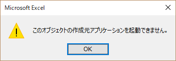
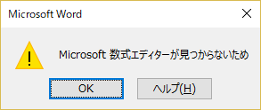
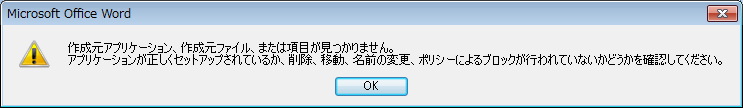

(※ 2018 年 1 月 15 日に Japan Office Support Blog に公開した情報のアーカイブです。)
2018/1/17 Update
[詳細] セクションに詳細情報を追記しました。
2018/1/23 Update
[現象] セクションにクイック実行版の記述を追記しました。
[詳細] セクションにクイック実行版の対象バージョンを追記しました。
!!2018/1/23 Update!!
現象
2018 年 1 月度にリリースされた、クイック実行形式の Office を対象のビルドに更新したり、Office 対象のセキュリティ更新プログラムとしてリリースされた Windows インストーラー版 Office 2007、Office 2010、Office 2013、Office 2016 向けの更新プログラムを適用すると、数式エディター 3.0 の機能が削除されます。
!!2018/1/17 Update!!
!!2018/1/23 Update!!
詳細
数式エディター 3.0 は、サードパーティによって作成された機能で、多くのバージョンの Office に含まれていましたが、セキュリティの脆弱性の問題が確認されたため、安全性への影響を考慮して 2018年 1 月度のセキュリティ更新プログラムの適用後は削除されます。更新プログラムをアンインストールしても、数式エディター 3.0 は再追加されません。
数式ツールは継続して使用することができます。
数式エディター 3.0 の機能が削除された後に、数式エディター 3.0 で新たに数式を作成したり、Office ファイル内に含まれる数式エディター 3.0 オブジェクトを編集することはできません。
数式エディター 3.0 オブジェクトを含むファイルを開いて、追加されている数式を表示することはできますが、編集しようとするとエラーが表示されます。
以下は、Excel または Word で表示されるメッセージです。アプリケーションやバージョンによって異なるメッセージもあります。
このオブジェクトの作成元アプリケーションを起動できません。

Microsoft 数式エディターが見つからないため

作成元アプリケーション、作成元ファイル、または項目が見つかりません。
アプリケーションが正しくセットアップされているか、削除、移動、名前の変更、ポリシーによるブロックが行われていないかどうかを確認してください。

数式エディター 3.0 の機能が削除された後の影響や対処策については、以下のサポート技術情報が公開されています。
Office 内の数式を編集するときのエラー
https://support.microsoft.com/ja-jp/help/4057882/
Windows インストーラ版の KB 番号は以下となります。
Office 2007
2007 Microsoft Office スイート セキュリティ更新プログラムについて2018 年 1 月 9 日
https://support.microsoft.com/ja-jp/help/4011656
Office 2010
Office 2010 用のセキュリティ更新プログラムについて2018 年 1 月 9 日
https://support.microsoft.com/ja-jp/help/4011610
Office 2013
Office 2013 用のセキュリティ更新プログラムについて2018 年 1 月 9 日
https://support.microsoft.com/ja-jp/help/4011580
Office 2016
Office 2016 用のセキュリティ更新プログラムについて2018 年 1 月 9 日
https://support.microsoft.com/ja-jp/help/4011574
Office 365 ProPlus を含むクイック実行版の更新を適用した場合も、同じように数式エディター 3.0 の機能が削除されます。
クイック実行版では 1 月 9 日リリースの以下の各バージョンが対象となります。
< Office 2016 >
月次チャネル [Monthly Channel]
バージョン 1711 (ビルド 8730.2175)
半期チャネル (対象指定) [Semi-Annual Channel (Targeted)]
バージョン 1708 (ビルド 8431.2153)
半期チャネル / 段階的提供チャネル [Semi-Annual Channel]
バージョン 1708 (ビルド 8431.2153)
バージョン 1705 (ビルド 8201.2217)
< Office 2013 >
バージョン : 15.0.4997.1000
本情報の内容 (添付文書、リンク先などを含む) は、作成日時点でのものであり、予告なく変更される場合があります。